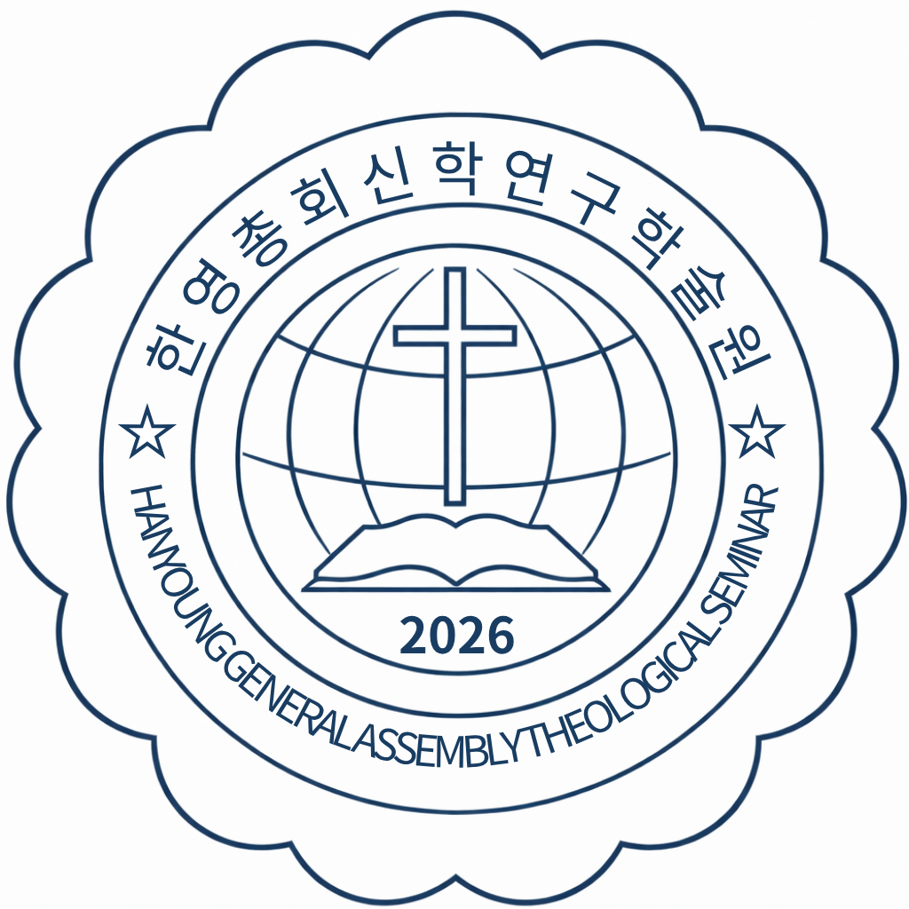

권미경
학장- 영성과리더쉽
- 서울한영신학대학교
- 서울한영신학대학원
- 상담학박사/교육학박사
채 윤
교수- 기독교의발견/이단종교
- 옥중서신/교회행정학
- 한영신학대학교
- 평택대학교 피어선신학전문대학원

남궁선
교수- 조직신학교
- 교단헌법
- 신약문헌의역사
손수호
교수- 종교개혁사/중세교회사/한국교회사
- 아세아연합신학대학원
- Church of God Theological Seminary M.Di
- 초대교회사
홍규식
교수- 히브리어/시가서/소요리문답
- Emory University
- Universiteit van Pretoria,
- 헬라어/글쓰기(논문작성법)
김에스더
교수- 신약개론/소선지서
- 경북대학교대학원
- 계명대학교
- 대선지서/신학과윤리

박효숙
교수- 목회상담학
- 상담의 이론과실재
- 이상심리학
양동균
교수- 설교학 / 목회학 / 예배학
- 총신대학교
- 중앙신학대학원대학교
서새영
교수- 기독교음악/종교음악
- 서울대학교
- 백석대기독교전문대학원

전보영
사무총장- 행정업무
- 세계 선교와 지역사회 사역 연계 교육
- 복음 전파와 선교 리더십 훈련
- 국내외 선교 현장 연구 및 프로젝트 지도